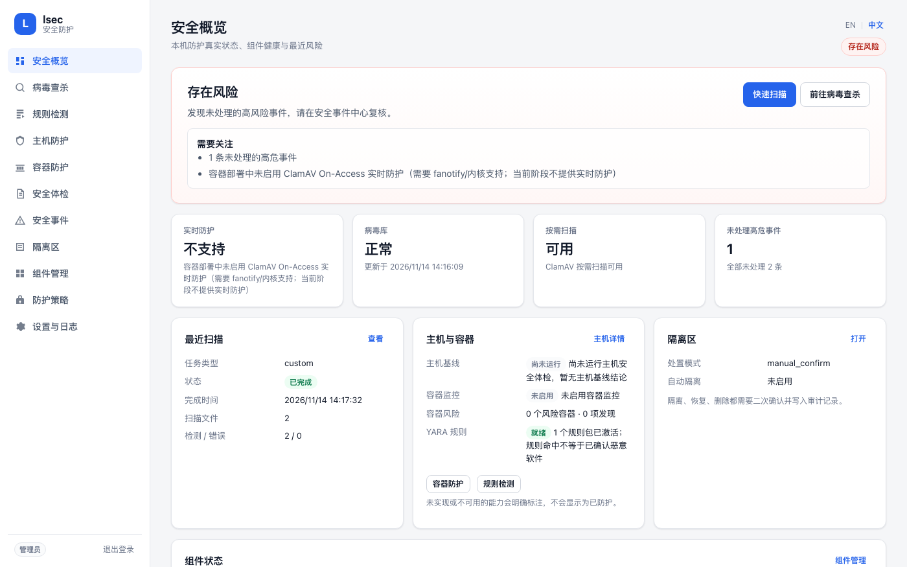

本地优先 · 默认只读
对主机安全，只给一个如实的视图。
lsec 是单实例守护进程，把 ClamAV、YARA、Lynis、Falco 与可选的本地 Wazuh Agent 统一到一个 Web UI、HTTP API 和 CLI 中。所有状态与风险结论都来自真实的主机探测—— 未安装或无法验证的能力，绝不会显示成“正在保护”。
Python 3.11+ · 仅标准库
Docker Compose 或 .deb
MIT 许可证
中文 / English UI

它能做什么
每项能力都在主机上真实探测、真实执行、真实校验。
如实状态
“已安装”不等于“正在防护”
组件健康区分未安装、未启动、降级、权限不足与检查失败；总体状态由这些事实推导，不做乐观合并。
恶意软件
ClamAV 与 YARA
通过 clamd 按需扫描；freshclam 更新后用 CVD 签名复核；YARA 规则包经 SHA-256、OpenSSL 与 yarac 编译校验。
主机基线
内置体检与 Lynis
只读检查 UID 0 账号、空密码、敏感权限、SSH 配置、监听端口、ASLR 与 AppArmor/SELinux。
运行时
Falco 与 Wazuh 事件
探测 Falco 能力并给出只读安装计划；可选读取本地 Wazuh Agent 告警——绝不是控制其他主机的 Manager。
容器
风险配置检查
通过独立的 GET-only Docker API 代理读取清单；lsec 不挂载 Docker Socket，也不能启动、停止或删除容器。
运维
统一事件中心与审计
事件归一化、确定性严重度、去重、带哈希校验的隔离区，以及每次处置的 JSON/CSV 导出。
它有意不做的事
- 不自动修复。没有显式、可审计的确认，就不会删除文件、终止进程或停止容器。
- 不自动安装。Falco 与 YARA 规则包不会被静默安装或下载；安装计划是只读的。
- 不提供 Wazuh Manager 能力。只读取本地 Agent 及其告警。
- 容器内不提供 ClamAV 实时防护。fanotify/On-Access 不可用，UI 会如实标注，而不是假装已覆盖。
一分钟跑起来
Docker Compose 最快；首次启动会下载 ClamAV 病毒库。
快速开始
构建镜像、在回环地址启动守护进程，然后读取自动生成的管理员令牌。
git clone https://github.com/UnmetDecade/linux-security-client.git
cd linux-security-client
docker compose up -d --build
docker compose exec -T lsec cat /data/secrets/admin.token然后打开 http://127.0.0.1:8080/。远程访问请使用 SSH 隧道。